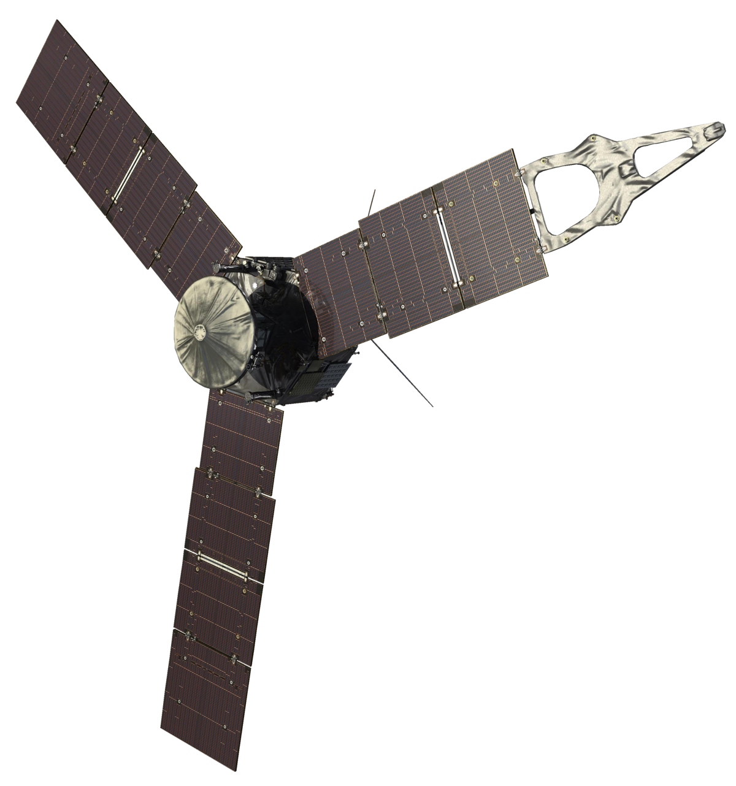
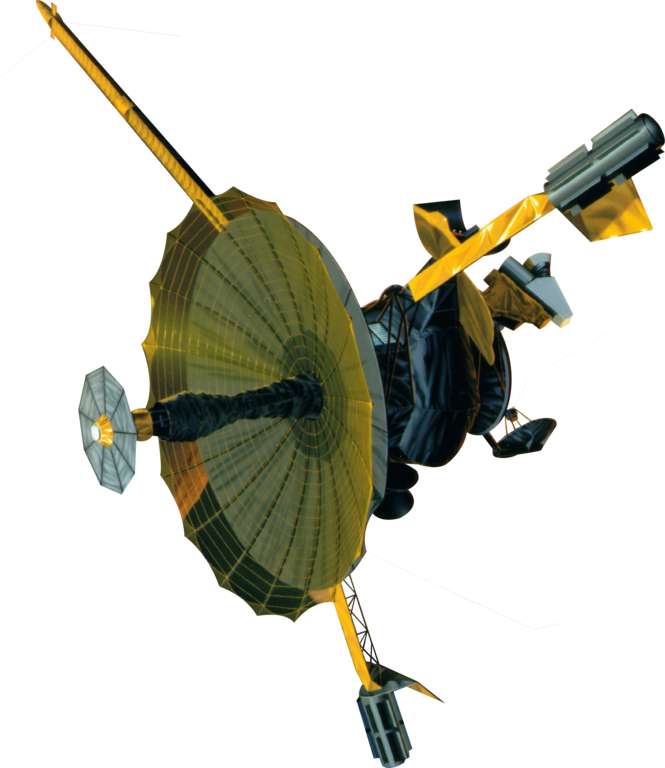
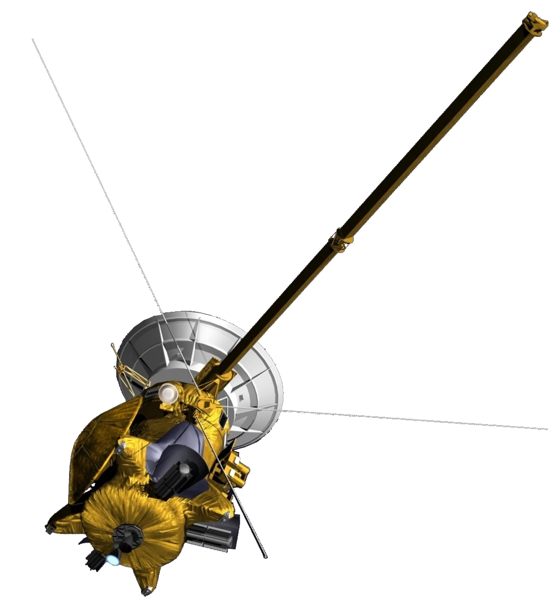
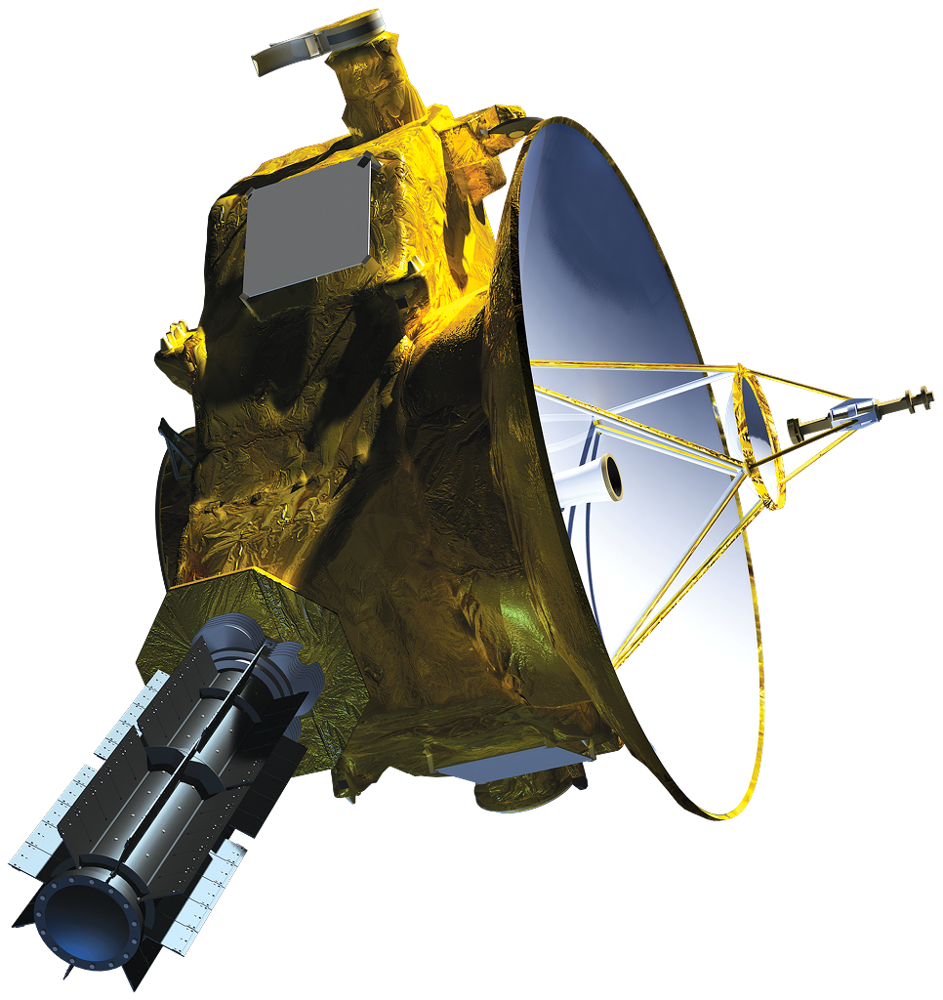
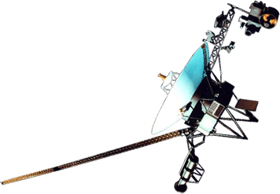
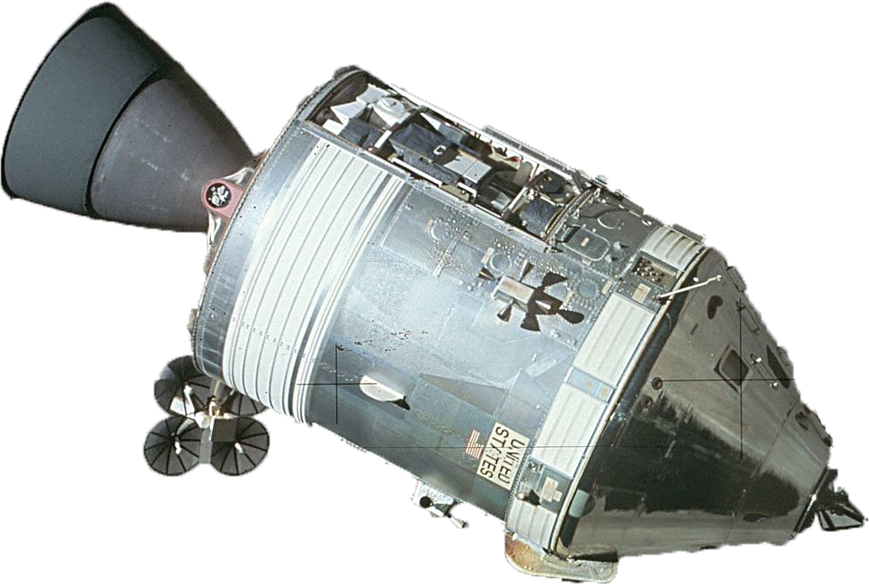
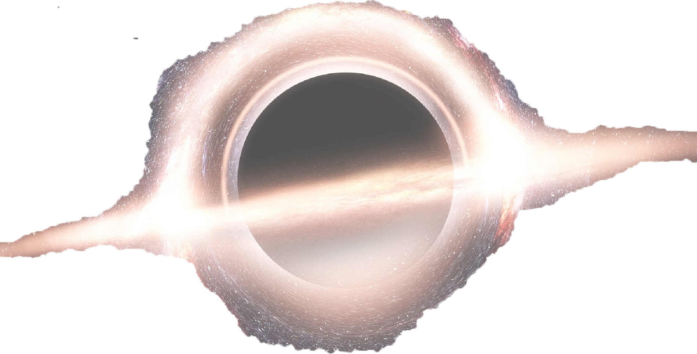

The race to space: Fastest spacecrafts ever made!
Space craft list







Destination
Sun
Jupiter
Jupiter
Saturn
Pluto

Interstellar
The Moon
Factsheet
The Parker Solar probe launched in 2018, with the mission of repeatedly probing and making observations of the outer corona of the Sun. Its average speed is 95.33km/s, the fastest space probe
Juno is the second spacecraft to orbit Jupiter, after the nuclear powered Galileo orbiter, which orbited from 1995 to 2003.Unlike all earlier spacecraft sent to the outer planets,Juno is powered by solar arrays, commonly used by satellites orbiting Earth and working in the inner Solar System. Its speed during orbit insertion was 58km/s.
Named after the Italian astronomer Galileo Galilei, Galileo was the first American uncrewed spacecraft to orbit. It primary mission is to study the planet Jupiter and its moons, as well as several other Solar System bodies. Despite suffering major antenna problems, Galileo discovered the first asteroid moon, Dactyl. In 1994, Galileo observed Comet Shoemaker–Levy 9's collision with Jupiter. Its speed during the Jupiter entry was 48km/s.
The Cassini–Huygens space-research mission, commonly called Cassini, involved a collaboration between NASA, the European Space Agency (ESA), and the Italian Space Agency (ASI) to send a probe to study the planet Saturn and its system, including its rings and natural satellites. The Flagship-class robotic spacecraft comprised both NASA's Cassini probe and ESA's Huygens lander, which landed on Saturn's largest moon, Titan. Cassini was the fourth space probe to visit Saturn and the first to enter its orbit. The two craft took their names from the astronomers Giovanni Cassini and Christiaan Huygens. Its average speed in space is 34km/s.
New Horizons is an interplanetary space probe that was launched in 2006 with the primary mission to observe the Pluto system and study one or more other Kuiper belt objects (KBOs). It is the fifth spacecrafts to leave the solar system. Its speed at launch was 16.26km/s
Voyager 1 is a space probe launched by NASA on September 5, 1977. Part of the Voyager program to study the outer Solar System, Voyager 1 was launched 16 days after its twin, Voyager 2. Having operated for 42 years, the spacecraft still communicates with the Deep Space Network to receive routine commands and to transmit data to Earth. At a distance of 147.380 AU (22.0 billion km; 13.7 billion mi) from Earth as of November 4, 2019, it is the most distant man-made object from Earth. Its interstellar space is 16km/h.
Apollo 10 was a May 1969 human spaceflight, the fourth crewed mission in the United States Apollo program, and the second (after Apollo 8) to orbit the Moon. After orbiting the Moon 31 times, Apollo 10 returned safely to Earth. Apollo 10 set the record for the highest speed attained by a crewed vehicle: 11.08 km/s on May 26, 1969, during the return from the Moon.